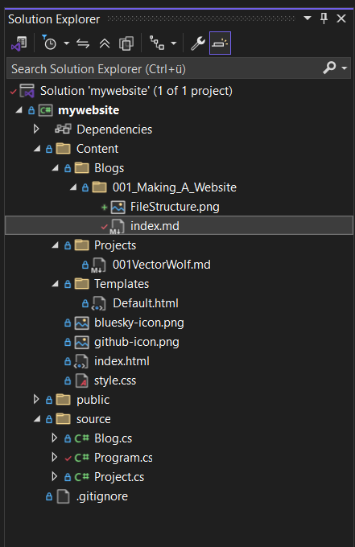

Making a website as a game developer
I have been a game developer since I started programming, and I have never looked into the other branches of programming. Something that I have always wanted to make was a website, but I did not want to learn web-dev and all of those no-programming-required tools weren't what I wanted. So that's why on the 4th of August 2025, I started making this website. In this blog post, I will explain how I made this website, and what tools I used.
What I knew before starting
Like I said above, I knew nothing about making websites. All I knew was C#, Lua, and lots of frameworks, mostly gamedev-related stuff. Lua and all the other frameworks were not relevant to making this website. I did make use of C# a lot - in fact, I used it to build a static website generator, which is used to power this website.
Static website generator
For those who don't know what a static website generator is: it's a tool that takes a template and some content, and generates a static website. A static website is a website that does not change - it is just a bunch of files that are served to the user. This is different from a dynamic website, which can generate content on the fly. I chose to create a static website generator because GitHub Pages, which is a free website hosting service, only supports static websites. Also, it is a lot easier to make a static website because you don't have to worry about databases and server-side code.
How it works
Okay, now that you know what a static website generator is, let me explain how I implemented my own. I used C# to create it and it's not even that complicated. The entire project only has 3 C# source files with 258 lines of code in total. Then there's all the HTML and CSS of course, which is a lot more.
Okay, now we're getting to the interesting part - how does it work?
It starts by scanning the Blog folder for blogs. Blogs are basically just folders with an index.md file in them. "md" is for Markdown files, which is quite a simple markup language that is used to format text. Then it will take a template file, which is an HTML file with a comment in it that tells the generator where to put the content of the blog.
Scanning for Blogs:
Part of Template:

But of course we can't just put Markdown in there, because it's two different languages, so the generator will convert the Markdown to HTML using a library called Markdig. The converted HTML will then be put in the template file, and it will also copy all the content needed by the blog. And just like that, we have a blog post.
Injecting Blog Content into Template
The generator will also put every blog post into the homepage so you can access them all from there. You might have noticed that there's also a Projects section on the homepage, which uses a similar system - but a lot simpler, as it is just a link to the GitHub repository of the project.
Entire File-structure of the generator:

That is about it, it really is that simple. If you want to learn more about the generator, you can find it on GitHub.
Thanks for reading my blog post! I hope you learned something new.
Have a nice day!